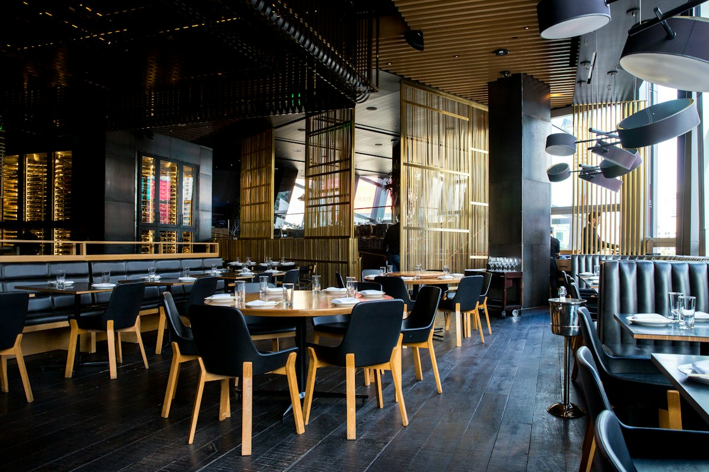
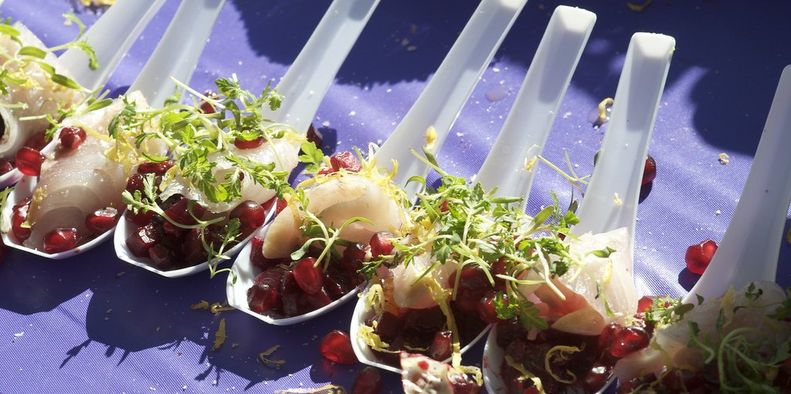
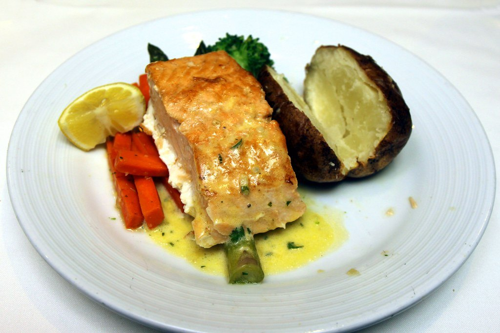
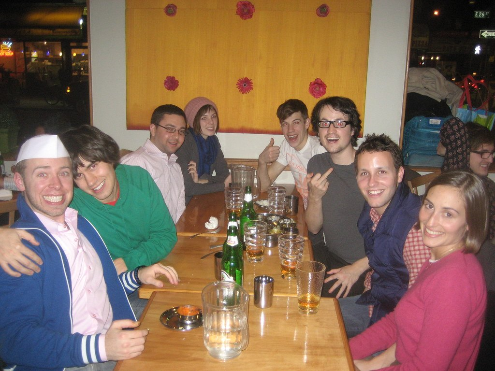
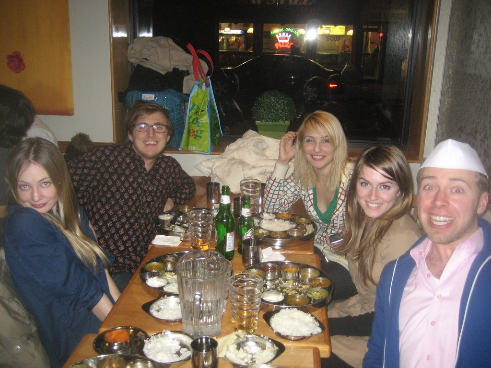
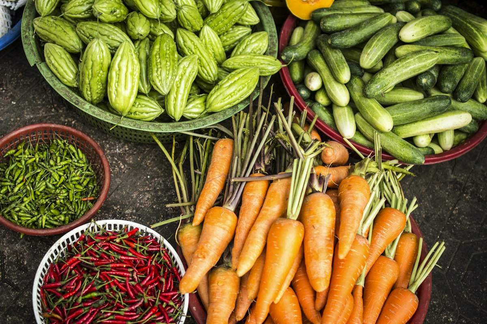
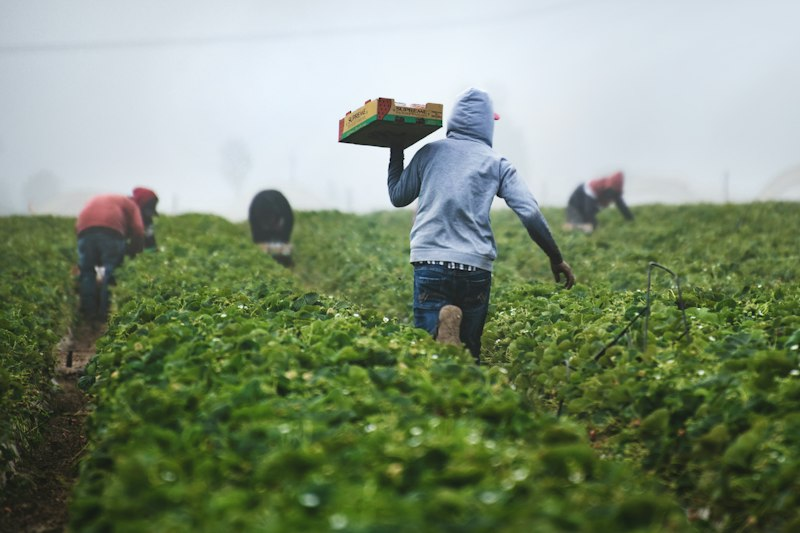

Starters · $12–16
3-Course Meal Dining
Whipped goat cheese, pickles, herb oil. Demo dish.
VegetarianGluten-Free
Current Season · Autumn · Seasonal rotation
Our menu changes with the land, the weather, and what our local producers bring us.
Three plates guests love this month



Menus Grids
Static demo grids — always visible, no season switch needed.

Starters · $12–16
Whipped goat cheese, pickles, herb oil. Demo dish.

Garden · $14–22
Heirloom carrots, Delicata, toasted seeds. Demo dish.

Hearth · $24–29
Aged parmesan, thyme, chanterelles. Demo dish.

Farm · $26–32
Garden vegetables, pan jus. Demo dish.

Bowls · $18–22
Ancient grains, roasted roots, herb oil. Demo dish.

Dessert · $12–14
Stone fruit, vanilla cream. Demo dish.
Chef's Tasting
One story from soup to orchard — Thu–Sat, 90 minutes at the table.

Chef's Tasting · Demo $65
Soup → garden → hearth → farm → orchard. Wine pairing +$30 demo.
Tasting $65 · Pairing +$30 (demo prices)
Tell us dietary needs at booking — every course adapts.
Spring
Greens, peas, asparagus, strawberries.
Summer
Tomatoes, corn, peaches, berries.
Autumn
Squash, mushrooms, roots, apples.
Winter
Brassicas, citrus, potatoes, greens.

Fourteen fictional demo partners supply the bulk of each plate. See who grows what.
Meet Our FarmersYes — all dishes and prices here are sample/demo content.
Note them at reservation; the kitchen adapts most dishes to GF/DF/VG.
Herbal infusions, local cider, low-intervention wines (demo list).
Hungry? · Tue–Sun 5–10pm
Tasting $65 demo · Supper Club Fri & Sat · 14 Orchard Lane, Willow Creek Valley.
Vegetarian, vegan & gluten-free every night — note needs at booking.